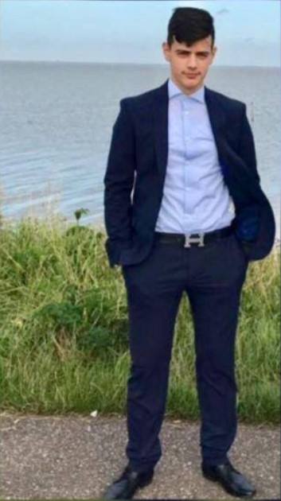

Persoonsgegevens
Nou dit ben ik dan!
Mijn naam is Majid Rahimi.
Ik ben 16 jaar oud.
Mijn hobby's zijn voetbal,fitness en gamen.

Als bijbaan werk ik bij een autogarage 3 keer in een week.
Ik zit bij de voetbalclub V.V. Dubbeldam en ik speel in de Jo17-2,
mijn positie is rechtsback of rechtsmid.
We trainen 2x per week en elke zaterdag hebben we een wedstrijd.
Ook fitness ik zo een 4x per week, ik fitness op maandag, woensdag, vrijdag en zondag.
Maandag en woensdag train ik mijn bovenlichaam.
Maandag is dat mijn armen, schouders en rug,
woensdag zijn mijn buik en borsten aan de beurt.
Vrijdag en zondag train ik mijn gehele benen.
Op vrijdag train ik mijn benen rustig,
omdat ik zaterdag meestal een voetbalwedstrijd heb.
Maar op zondag train ik mijn bovenbenen en mijn kuiten veel intensiever.
TERUG